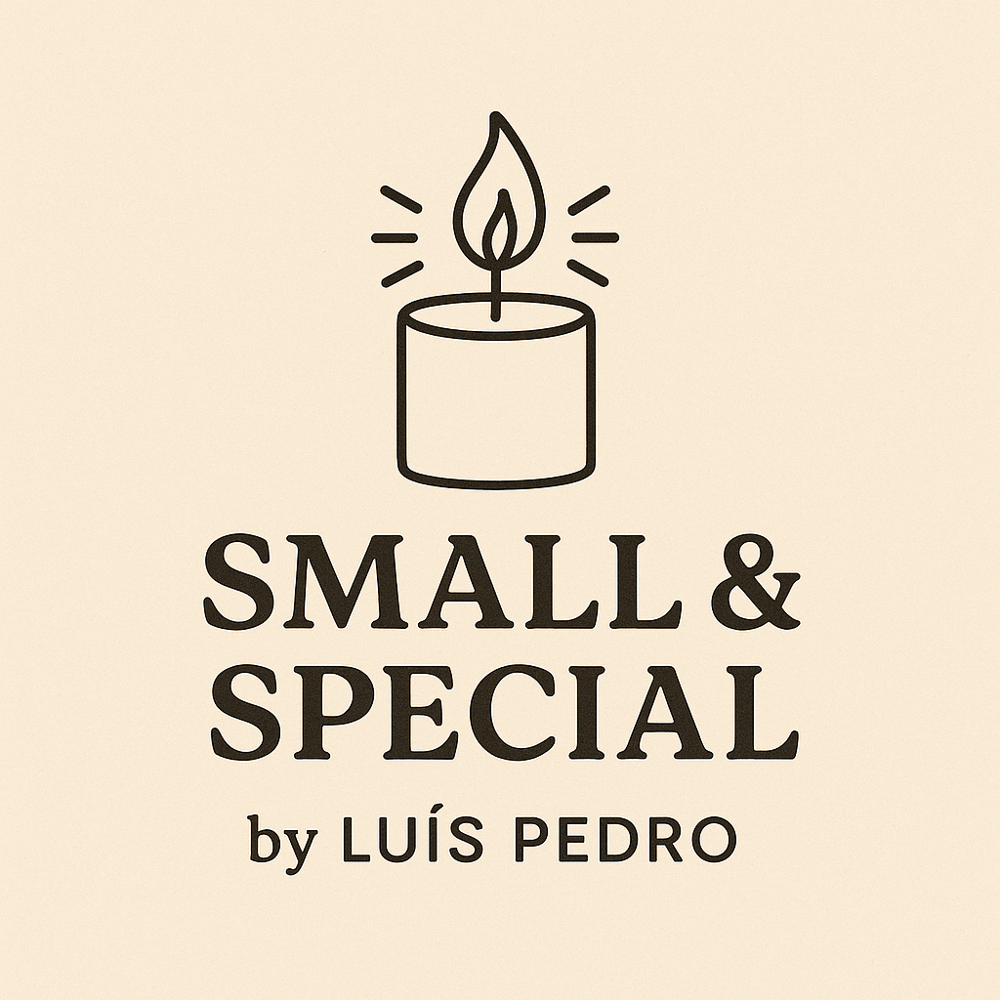
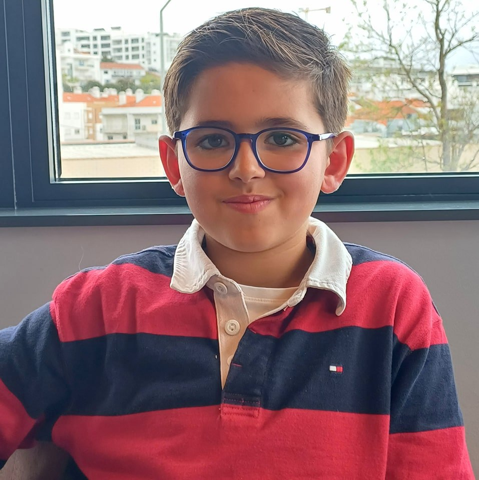

Small & Special by Luís Pedro
Velas artesanais feitas com carinho por um jovem artista de 11 anos.
Cada criação é única e feita para iluminar momentos felizes com luz, cor e um toque de alegria.
Aromas suaves
Feito à mão
Peças únicas

Olá! Sou o Luís Pedro, tenho 11 anos e adoro transformar criatividade em velas que tornam cada momento especial. Sou um estudante que gosta de jogar xadrez e de criar velas únicas, feitas com muito carinho. Elas trazem alegria à minha família e aos meus amigos — e espero que tragam também um sorriso a ti!
Velas de Natal
Miminhos de Natal para Oferecer
Velas Temáticas Diversas
Próximos Mercados de Natal